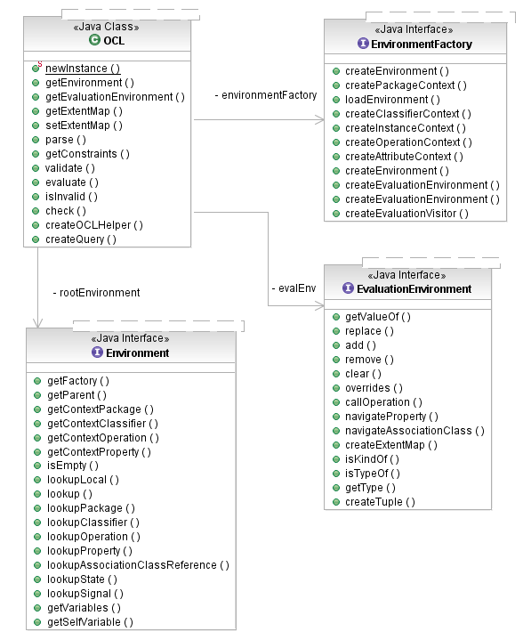

[as SVG]
The OCL parser provides two APIs for parsing constraint and query expressions. The OCLHelper interface is designed primarily for parsing constraints and query expressions embedded in models, such as Ecore or UML models. The OCL class serves as the main entrypoint into the parsing API but also implements the parsing of OCL documents, for example from text files. In both cases, the concept of Environment is crucial.
The following diagram shows the core of the Environment API, that clients of the OCL parser interact with:

[as SVG]
The OCL class is a generic type; its type parameters represent the various metaclasses of the metamodels that OCL works with in the UML/MOF family of OMG specifications. For example, <C> represents the Classifier concept, <O> the Operation concept, etc. See the discussion of metamodels supported by OCL for details of the mappings. The same type parameter names are used consistently throughout the OCL APIs to represent the same metaclasses.
The OCL class defines instances of autonomous OCL parsing and evaluation environments. It has a single root Environment created by an EnvironmentFactory implementation for a particular EMF-based metamodel. The OCL environment consists, conceptually, of the model that is to be constrained together with all of the constraints and additional operations and attributes defined (via OCL) for the purpose of formulating constraints.
Environments nest. Usually the root environment has no correlation to an element in the model, or it may correspond to some Package providing a default namespace (called a package context). Alternatively, it may contain one or more nested environments defining package namespaces. A package context contains one or more classifier contexts, which in turn can contain operation and/or attribute contexts. Whereas the purpose of a package context is primarily to assist in the look-up of named model elements, the classifier, operation, and attribute contexts have deeper meaning.
A classifier context defines the type of the self variable in OCL constraints and queries. By itself, it is the context for invariant constraints for the context classifier. Additionally, as the parent context for operation and attribute constraints, it indicates the classifier in which context an operation or attribute constraint applies; this may be the classifier that defines these features, or it may inherit them from some more general classifier.
An Environment may contain named Variables to which OCL expressions can refer. The most common of these is self. Others include the parameters defined by an operation (and its result), in the case of an operation context. The OCL API even allows clients to add variables, in code, to define "global" names.
The static factory methods on the OCL class are used to create instances. It is a good practice to re-use the same OCL instance for all parsing and evaluation of constraints and queries on a model while that model is loaded (usually in some ResourceSet in an editor). Using the shared environment factory for the Ecore metamodel, we can create an OCL environment suitable for parsing OCL constraints on any Ecore model and evaluating them on instances of the model:
// create an OCL instance for Ecore OCL<?, EClassifier, ?, ?, ?, ?, ?, ?, ?, Constraint, EClass, EObject> ocl; ocl = OCL.newInstance(EcoreEnvironmentFactory.INSTANCE);
Several of the type parameters in the OCL generic type signature are useful mostly within the OCL API. We leave them, here, as wildcards.
From an OCL instance, we can create a helper object with which to parse constraints and additional operation/attribute definitions. This OCLHelper stores all of the instantiations of OCL template metaclasses (such as CollectionType(T) and TupleType) and additional operation/attribute definitions in the root environment of the OCL that created it. This ensures that all of these constructs are available for reuse in subsequent parsing.
[as SVG]
The OCLHelper is primarily designed for parsing constraints and query expressions embedded in models, providing the following API for that purpose:
Different kinds of constraints require different context environments. The setContext(), setOperationContext(), and setAttributeContext() methods create the appropriate nested Environments in the host OCL instance's root environment.
The result of parsing a query expression is an OCLExpression, an instance of the Abstract Syntax Model. The result of parsing a constraint is an instance of the Constraint metaclass defined by the OCL's target metamodel.
// create an OCL helper object
OCLHelper<EClassifier, ?, ?, Constraint> helper = ocl.createOCLHelper();
// set the OCL context classifier
helper.setContext(EXTLibraryPackage.Literals.LIBRARY);
Constraint invariant = helper.createInvariant(
"books->forAll(b1, b2 | b1 <> b2 implies b1.title <> b2.title)");
OCLExpression<EClassifier> query = helper.createQuery(
"books->collect(b : Book | b.category)->asSet()");
Ecore does not define a Constraint metaclass, so the OCL binding for Ecore supplies one.
In the case of constraints on operations or attributes, the context consists of two elements: the constrained operation/attribute and a classifier in the context of which the constraint is to apply. This accounts for the possibility that a classifier defines constraints on inherited features. As an example, consider the EModelElement::getEAnnotation(EString) operation and EReference::eReferenceType property in the Ecore metamodel. These can be constrained as follows:
EOperation oper = null;
for (EOperation next : EcorePackage.Literals.EMODEL_ELEMENT.getEOperations()) {
if ("getEAnnotation".equals(next.getName()) {
oper = next;
break;
}
}
// define a post-condition specifying the value of EModelElement::getEAnnotation(EString).
// This operation environment includes variables representing the operation
// parameters (in this case, only "source : String") and the operation result
helper.setContextOperation(EcorePackage.Literals.ECLASS, oper);
Constraint body = helper.createPostcondition(
"result = self.eAnnotations->any(ann | ann.source = source)");
// define a derivation constraint for the EReference::eReferenceType property
helper.setContextAttribute(
EcorePackage.Literals.EREFERENCE,
EcorePackage.Literals.EREFERENCE__EREFERENCE_TYPE);
Constraint derive = helper.createDerivedValueExpression(
"self.eType->oclAsType(EReference)");
Copyright (c) 2000, 2007 IBM Corporation and others. All Rights Reserved.